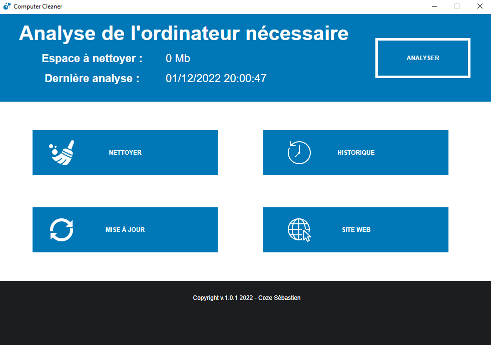
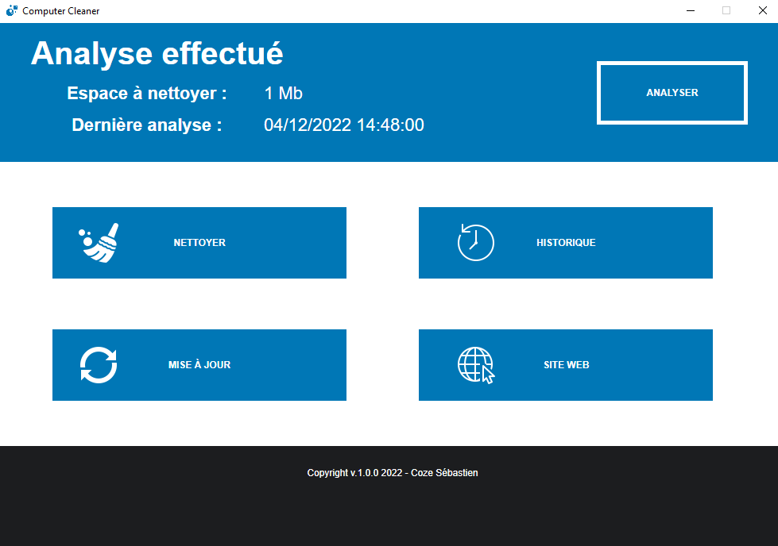
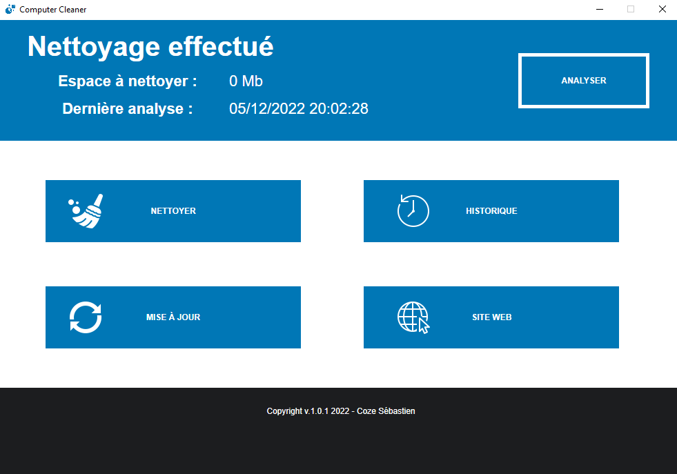

Computer Cleaner
Présentation du projet
Computer Cleaner est un projet qui consiste en la création d'un logiciel permettant de nettoyer son ordinateur. Ce logiciel est uniquement compatible avec Windows. Enfin, il a été réalisé en C# avec le framework WPF de .NET.
Images du projet



Ce que ce projet m'a apporté
Grâce à ce projet, j'ai pu, pour la première fois, utiliser le framework WPF de .NET. J'ai aussi pu approfondir mes compétences en C#, notamment pour ce qui est de la gestion des fichiers.
Pistes d'amélioration
- Ajouter une gestion d'historique.
- Ajouter la possibilité de nettoyer plus de dossiers.
- Ajouter une gestion des paramètres utilisateurs pour, par exemple, pouvoir sélectionner les dossiers à nettoyer.